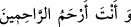

(__WORD__)’deki (__WORD__) harfi, fiili müteaddî kılan bâ’dır. (__WORD__) ve (__WORD__) yorgunluk ve meşakkat
demektir. Azap ise şiddetli ağrı verme anlamındadır. ‘Elem ve tasa dokundurdu’ derken,
yakalandığı hastalığı ve karşılaştığı türlü türlü sıkıntıyı kasdetmektedir. Enbiyâ sûresi
21/83’teki (__WORD__) ifâdesindeki “dert” anlamına gelen (__WORD__)’dan maksad da budur.
(__WORD__) şeklindeki bu nidada, Eyyûb’un nida ederken kullanmış olduğu kelimeler
aynen tekrarlanarak hikâye edilmiştir. Dolaylı bir anlatım sözkonusu olmuş olsaydı, (…
) yâni “şeytanın kendisine yorgunluk ve meşakkat verdiğini anlatarak nidâ etti”
denecekti.
Burada, Eyyûb’un (a.s.) duâsının tamamı zikredilmemiştir. Devamında (__WORD__) yâni “çünkü Sen, merhamet edenlerin en merhametlisisin!” ifâdesi
de yer almaktadır. Enbiyâ sûresinde zikredilmiş olmasıyla iktifa edilmiştir. Tıpkı şeytan
kelimesinin, bu sûrede zikredilmesine dayanılarak Enbiyâ suresinde zikredilmemesi
gibi.
Şayet, ‘Şeytanın, kesinlikle insanları hasta etme gibi bir gücü yoktur! Böyle bir gücü
olmuş olsaydı, peygamberleri, velîleri, âlim ve sâlihleri öldürmeğe çalışıp dururdu. Bu
bakımdan o, hiçbir kimseye bozuk birtakım düşünce ve vesveselere düşürme dışında
hiçbir zarar veremez. Öyleyse, âyette hastalık verme veya dokundurma fiilinin ona isnâd
edilmesinin anlamı nedir?’ diye soracak olursanız, şöyle cevap veririz: Eyyûb’a (a.s.)
isabet eden bu hastalık sadece ve sadece Allah’tan kaynaklanmıştır. Ancak Allah
Teâlâ’dan, böyle bir zarar vererek Eyyûb’un sabrını denemesini şeytan istediği için ona
izâfe etmektedir. Bu nedenle mezkûr fiilin Allah’a değil de şeytana isnâd edilmesinde
edebe aykırı bir durum söz konusu değildir.
Rivâyet edilir ki: Eyyûb’un (a.s.) çeşitli türlerde çok sayıda malı bulunmasına
rağmen, Allah’a itâat etmeğe ve fakir, yetim ve ihtiyaç sâhiplerine ihsanda bulunmaya
devam etmekteydi. Bu yüzden Şeytan onu kıskanarak ‘şuna bak, hem dünyasını hem de
âhiretini âbâd ediyor!’ demeye başladı ve Allah’a: “Allahım! Kulun Eyyûb’a bunca
nimet verdiğinden dolayı şükrediyor; sağlık ve âfiyet verdiğin için hamdediyor, ama
elindeki nimet ve âfiyeti çekip alarak kendisini imtihan edecek olsan, yine bu şekilde
davranamaz, herhalde!” diye duâ etti. Cenâb-ı Hak cevaben buyurdu ki: “Ben kesin
olarak biliyorum ki, o bana her hal ve şartta kulluk etmeğe devam edecektir.” Bu cevabı
alan İblis’in: “Ya Rabbi! Öyleyse beni, ona ve çoluk çocuğuna musallat et” demesi
üzerine Allah, İblis’i ona musallat etti. O da hemen Eyyûb’un ekinini yakıp, binayı
çocuklarının üzerine yıktı. Fakat bu Eyyûb’un (a.s.) Rabbine hamdini artırmaktan başka
bir işe yaramadı. Bunun üzerine İblis, Eyyûb’un bedenine üfledi. Bunun sonucu olarak
bedeninde çıbanlar çıkıp yaralarından kapkara kan damlamaya başladı. Eyyûb böylece
sabır, rızâ ve teslimiyet makamında tam yedi sene devam etti. Eyyûb’un (a.s.) böyle bir
imtihana tabi tutulması, Allah’ın kendisinden sâdır olmuş bir günaha karşılık vermiş
olduğu bir cezâ değildir. Bu imtihan, onun nasıl bir iç-dünyası bulunduğunun ortaya
çıkması ve böylece herkesin, onun, Rabbi katında ne kadar yüksek derecelere sâhip